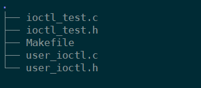
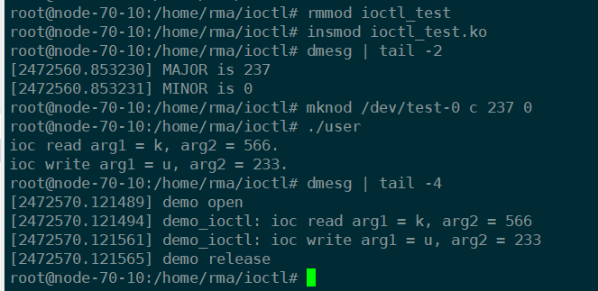

函数原型
1 |
|
通过ioctl函数完成用户态和内核态之间的交互
使用注意
在Linux系统中，用户空间和内核空间之间是相互隔离开的。驱动程序运行在内核空间中，给出的地址也是在内核空间中的地址，运行在用户空间下的用户程序即使拿到这个地址，也不能访问内核空间。这时，我们需要使用到copy_to_user()函数，将要传递的内容从内核空间拷贝到用户空间，用户程序再访问用户空间中的该内容即可。
参数
fd是文件描述符。当我们的设备作为特殊文件被open()函数打开后，会返回一个文件描述符，通过操作这个文件描述符达到操作设备文件的目的。
request是命令码，应用程序通过下发命令码来控制驱动程序完成对应操作。
第三个参数“…”是可变参数arg，一些情况下应用程序需要向驱动程序传参，参数就通过ag来传递。ioctl函数中的“…”只能传递一个参数，但内核不会检查这个参数的类型。那么，就有两种传参方式：只传一个整数，传递一个指针。
如果ioctl执行成功，它的返回值就是驱动程序中ioctl接口给的返回值，驱动程序可以通过返回值向用户程序传参。但驱动程序最好返回一个非负数，因为用户程序中的ioctl运行失败时一定会返回-1并设置全局变量errorno。
errono不同的值代表的含义如下：
| 错误码 | 描述 |
|---|---|
| EBADF | fd是一个无效的文件描述符。 |
| EFAULT | 在arg是指针的前提下，argp指向一个不可访问的内存空间。 |
| EINVAL | request或argp是无效的。 |
| ENOTTY | fd没有关联到一个字符特殊设备，或该request不适用于文件描述符fd引用的对象类型。（说人话就是fd没有指向一个字符设备，或fd指向的文件不支持ioctl操作） |
因此，在用户空间调用ioctl时，可以使用如下的错误判断处理。包括的两个头文件，string.h声明了strerror函数，errno.h定义了错误码errno。
1 |
|
驱动程序中的ioctl接口
在驱动程序的ioctl函数体中，实现了一个switch-case结构，每一个case对应一个命令码，case内部是驱动程序实现该命令的相关操作。
ioctl的实现函数要传递给file_operations结构体中对应的函数指针，函数原型为
1 |
|
unlocked_ioctl在无大内核锁（BKL）的情况下调用。64位用户程序运行在64位的kernel，或32位的用户程序运行在32位的kernel上，都是调用unlocked_ioctl函数。
compat_ioctl是64位系统提供32位ioctl的兼容方法，也在无大内核锁的情况下调用。即如果是32位的用户程序调用64位的kernel，则会调用compat_ioctl。如果驱动程序没有实现compat_ioctl，则用户程序在执行ioctl时会返回错误Not a typewriter。
另外，如果32位用户态和64位内核态发生交互时，第三个参数的长度需要保持一致，否则交互协议会出错。
用户与驱动之间的ioctl协议构成
也就是request或cmd，本质上就是一个32位数字，理论上可以是任何一个数，但为了保证命令码的唯一性，linux定义了一套严格的规定，通过计算得到这个命令吗数字。linux将32位划分为四段。
| 字段名 | 大小 | 含义 |
|---|---|---|
| dir | 2bit | 即direction，表示ioctl命令的访问模式，分为无数据(_IO)、读数据(_IOR)、写数据(_IOW)、读写数据(_IOWR)四种模式。 |
| size | 14bit | 即device type，表示设备类型，也可翻译成“幻数”或“魔数”，可以是任意一个char型字符，如’a’、‘b’、‘c’等，其主要作用是使ioctl命令具有唯一的设备标识。不过在内核中’w’、‘y’、'z’三个字符已经被使用了。 |
| type | 8bit | 涉及到ioctl的参数arg，占据13bit或14bit，这个与体系有关，arm使用14bit。用来传递arg的数据类型的长度，比如如果arg是int型，我们就将这个参数填入int，系统会检查数据类型和长度的正确性。 |
| nr | 8bit | 即number，命令编号/序数，取值范围0~255，在定义了多个ioctl命令的时候，通常从0开始顺次往下编号。 |
在上面的四个参数都需要用户自己定义，linux系统提供了宏可以使程序员方便的定义ioctl命令码。
1 | include/uapi/asm-generic/ioctl.h |
ioctl使用的简单实例——整数传参
本例中，我们让ioctl传递三个命令，分别是一个无参数、写参数、读参数三个指令。首先我们需要确定两个头文件，命名为ioctl_test.h和user_ioctl.h，用来分别定义内核空间和用户空间下的命令码协议。两个头文件中除了引用不同的头文件外，其他内容需要完全一致，以保证协议的一致性。
代码结构图如下

ioctl_test.h
1 |
|
user_ioctl.h
1 |
|
ioctl_test.c
核心函数是demo_ioctl，使用一个switch-case完成用户程序下发的指令。
1 |
|
user_ioctl.c
打开设备节点，依次下发三条指令，打印参数和ioctl的返回值，关闭设备节点。
1 |
|
Makefile
1 | ifneq ($(KERNELRELEASE),) |
编译
1 | root@node-70-10:/home/rma/ioctl# make |
运行结果
